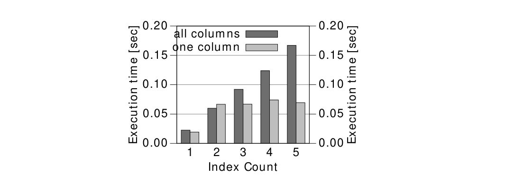

Chương 8: Chỉnh sửa Dữ liệu
Hình 8.3 cho thấy thời gian phản hồi cho hai câu lệnh cập nhật: một câu lệnh thiết lập tất cả các cột và ảnh hưởng đến tất cả các chỉ mục và sau đó là một câu lệnh thứ hai cập nhật một cột duy nhất vì vậy nó chỉ ảnh hưởng đến một chỉ mục.

Cập nhật trên tất cả các cột cho thấy cùng một mẫu mà chúng ta đã quan sát trong các phần trước: thời gian phản hồi tăng lên với mỗi chỉ mục bổ sung. Thời gian phản hồi của câu lệnh cập nhật chỉ ảnh hưởng đến một chỉ mục không tăng nhiều vì nó để lại hầu hết các chỉ mục không thay đổi.
Để tối ưu hóa hiệu suất cập nhật, bạn phải chú ý chỉ cập nhật những cột đã thay đổi. Điều này là hiển nhiên nếu bạn viết câu lệnh update bằng tay. Tuy nhiên, các công cụ ORM có thể tạo ra các câu lệnh update thiết lập tất cả các cột mỗi lần. Hibernate, chẳng hạn, làm điều này khi tắt chế độ cập nhật động. Kể từ phiên bản 4.0, chế độ này được bật theo mặc định.
Khi sử dụng các công cụ ORM, một thực tiễn tốt là thỉnh thoảng bật ghi nhật ký truy vấn trong môi trường phát triển để xác minh các câu lệnh SQL được tạo ra. Mẹo có tiêu đề “Bật Ghi nhật ký SQL” trên trang 95 có một cái nhìn tổng quan ngắn gọn về cách bật ghi nhật ký SQL trong một số công cụ ORM được sử dụng rộng rãi.